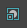

本主题适用于节点编辑器和 Hypershade 窗口。
在任何视图模式下，都可以通过单击工具栏中的  在节点样例的较大版本和较小版本之间切换。如果单击图标而不选择任何节点，则所有节点都会受到影响。
或者，可以右键单击节点，然后从节点标记菜单中选择“切换样例大小”(Toggle Swatch Size)或“切换选择样例大小”(Toggle Selection Swatch Size)。
“切换选择样例大小”(Toggle Selection Swatch Size)将影响所有选定节点。“切换样例大小”(Toggle Swatch Size)仅影响从中选择了菜单项的节点。
您也可以使用热键 v，但它仅适用于节点编辑器，而不适用于 Hypershade。